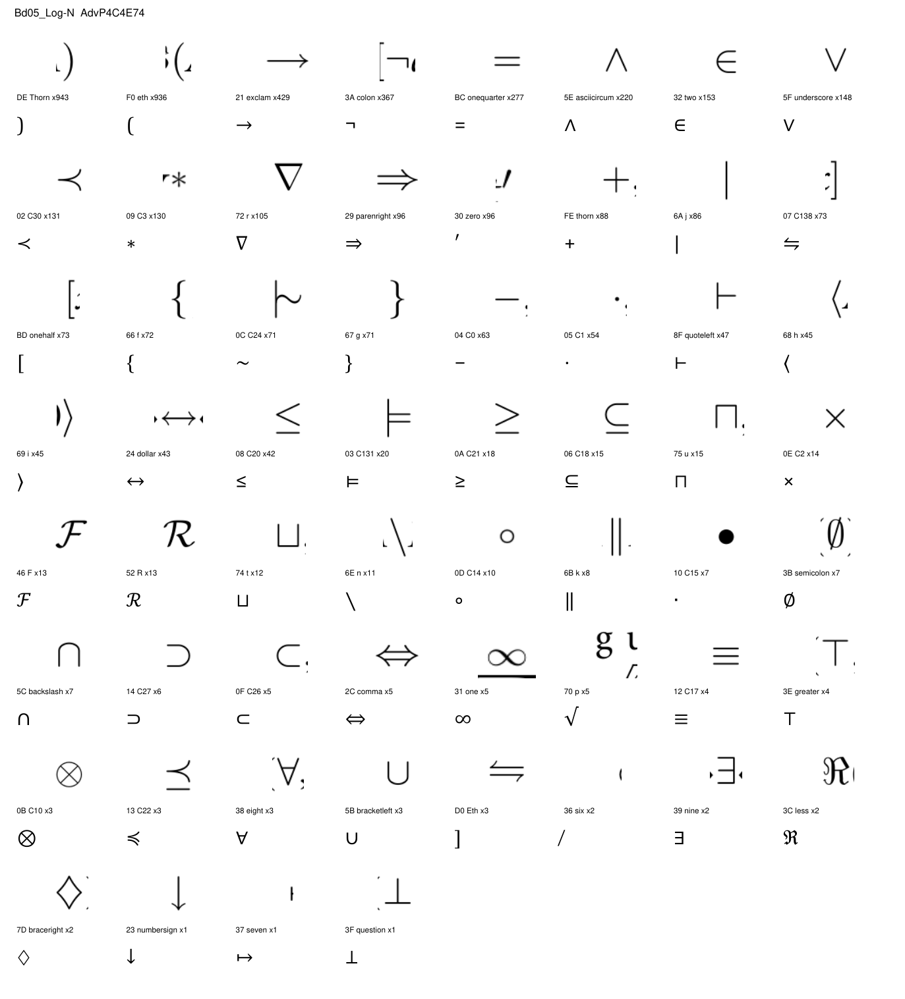
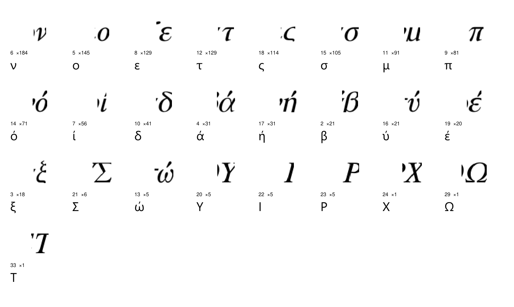

Ein Essay über einen Zitationsgraphen
Das unabsichtliche Selbstporträt
Was … Querverweise über die Philosophie verraten – und was sie über sich selbst verschweigen.
Die Enzyklopädie Philosophie und Wissenschaftstheorie, herausgegeben von Jürgen Mittelstraß, ist acht Bände stark, alphabetisch geordnet und – wie jedes Nachschlagewerk – dafür gebaut, dass man sie nicht von vorn bis hinten liest. Man schlägt ein Wort auf, folgt einem Pfeil zum nächsten Wort, und irgendwann klappt man das Buch zu. Die Pfeile, im Druck ein kleines ↑ vor dem Stichwort, sind der Gegenstand dieses Textes. Es gibt … davon.
Jeder dieser Pfeile ist eine redaktionelle Entscheidung: Hier, sagt er, gehört ein anderer Artikel dazu. Niemand hat diese Entscheidungen als Ganzes geplant. Sie wurden über Jahrzehnte von Dutzenden Autorinnen und Autoren getroffen, Artikel für Artikel, ohne Blick auf ein Gesamtbild. Legt man sie übereinander, entsteht trotzdem eines: ein Graph mit … Knoten und … gerichteten Kanten, in dem jeder Artikel ein Punkt ist und jeder Pfeil eine Linie. Der Atlas zeigt diesen Graphen als Karte. Dieser Text fragt, was die Karte erzählt.
Die These vorweg: Der Zitationsgraph ist ein unabsichtliches Selbstporträt der Disziplin. Er wurde nicht als Landkarte der Philosophiegeschichte entworfen, aber er enthält eine – samt Schulen, Epochengrenzen und den Stellen, an denen sich das Fach bis heute nicht auf einen Begriff einigen kann. Fünf Befunde, und ein Nachtrag zur Methode.
Kapitel 1
Begriffe, nicht Menschen
Wer wird am häufigsten zitiert? Die Antwort ist eindeutig und ein wenig überraschend: niemand. Unter den … meistzitierten Einträgen finden sich Personen – …. An der Spitze steht … mit … eingehenden Verweisen, dann … (…) und … (…). Die meistzitierte Person ist … mit … Verweisen; die Pythagoreer – eine Schule, kein Mensch – kommen auf …. Kant steht bei …, Aristoteles bei …, Popper bei …, Kripke bei ….
Das ist zunächst eine Eigenschaft der Gattung. Ein Sachlexikon verweist auf Sachen; die Biographien sind Beiwerk, kurze Einträge, die klären, wer gemeint ist, wenn im Artikel über Kausalität ein Name fällt. Aber der Befund geht tiefer, denn die Autoren hätten anders verweisen können – auf den Denker statt auf den Begriff, den er geprägt hat – und tun es fast nie. Die Enzyklopädie behandelt Ideen, als gehörten sie niemandem.
Karl Popper hat dafür ein Bild: die dritte Welt. Neben der physischen Welt (Welt 1) und der Welt der Bewusstseinszustände (Welt 2) gibt es für ihn eine Welt der objektiven Gedankeninhalte – Theorien, Probleme, Argumente –, die existieren, sobald sie formuliert sind, unabhängig davon, ob jemand sie gerade denkt. Der Graph verhält sich, als wäre diese These in ihn eingebaut. Er ist eine Karte von Welt 3: Begriffe verweisen auf Begriffe, und die Menschen, die sie hervorgebracht haben, stehen am Rand. Foucault hätte dieselbe Beobachtung anders gelesen – als Beleg dafür, dass „der Autor“ eine nachträgliche Ordnungsfunktion ist, die ein Diskurs nicht braucht, um zusammenzuhalten. Beide Lesarten passen. Bemerkenswert ist, dass ein alphabetisch sortiertes Buch sie überhaupt hergibt.
Am anderen Ende der Skala: … Einträge (…) werden von keinem anderen Artikel je zitiert – und … davon sind Personen. Der mittlere Eintrag hat … eingehende Verweise. Es ist ein Graph mit sehr wenigen Zentren und einer sehr breiten Peripherie.
Kapitel 2
Die Landkarte der Schulen
Die Bände sind alphabetisch geordnet. Das ist ein ordo cognoscendi: die Reihenfolge, in der man etwas findet, nicht die, in der es zusammengehört. Die zweite Ordnung – ordo essendi, wenn man das scholastische Wort nicht scheut – steckt in den Pfeilen. Ein Algorithmus hat sie freigelegt. Er sucht Gruppen von Artikeln, die einander häufiger zitieren als den Rest, und findet … solcher Regionen, von der größten (…, … Einträge) bis zur kleinsten (…, …). Die Namen der Regionen sind von Hand vergeben. Ihre Mitglieder hat niemand ausgesucht.
Zwei Dinge fallen auf. Erstens ist die Karte innenlastig: … aller Verweise bleiben in der eigenen Region. Formale Logik diskutiert mit formaler Logik. Zweitens sind die Beziehungen zwischen Regionen selten symmetrisch. Am einseitigsten: … zitiert … …-mal, die Gegenrichtung kommt auf … – ein Verhältnis von …. Wer das Werkzeug liefert, wird zitiert; wer es benutzt, zitiert.
Ist das nicht einfach das Alphabet? Könnte eine Region nur deshalb zusammenhängen, weil ihre Artikel im selben Band stehen und Autoren gern in die Nachbarschaft verweisen? Die Kreuztabelle beantwortet das. Jede Zeile ist ein Band, jede Spalte eine Region, jede Zelle der Anteil des Bandes, der in diese Region fällt.
Cramérs V misst, wie stark zwei Einteilungen zusammenhängen: 0 bei Unabhängigkeit, 1, wenn die eine die andere vollständig bestimmt. Es liegt hier bei …. Die Regionen sind nicht das Alphabet. Sie sind das, was übrig bleibt, wenn man das Alphabet abzieht.
Wittgenstein hätte für solche Regionen ein Wort gehabt: Familienähnlichkeit. Kein Artikel in Ethik & praktische Philosophie teilt ein einziges Merkmal mit allen anderen; sie hängen zusammen wie die Mitglieder einer Familie, über ein Netz sich überkreuzender Ähnlichkeiten – hier: sich überkreuzender Verweise. Der Algorithmus definiert nichts. Er zählt, wer mit wem spricht.
Kapitel 3
Laute Zentren, leise Brücken
„Wichtig“ ist in einem Netzwerk kein einfacher Begriff. Man kann zählen, wie oft ein Eintrag zitiert wird – das ist Wichtigkeit als Prestige. Man kann aber auch zählen, wie oft ein Eintrag auf dem kürzesten Weg zwischen zwei anderen liegt – Wichtigkeit als Vermittlung, in der Netzwerkanalyse Betweenness genannt. Die beiden Maße messen verschiedene Dinge, und das Diagramm zeigt, wie verschieden.
Die meisten Einträge liegen auf der Diagonalen: viel zitiert, viel dazwischen. Den höchsten Betweenness-Wert hat …, ein Eintrag, der nach Verweisen nur auf Rang … steht. Interessanter sind die Abweichler. Rationalität wird …-mal zitiert, Rang … – und steht bei der Betweenness auf Rang …. Das ist ein Begriff, den kaum jemand als Ziel ansteuert, an dem aber sehr viele Wege vorbeiführen: eine leise Brücke zwischen Phänomenologie, Ethik und Wissenschaftstheorie. Die Wissenschaftsforschung nennt so etwas ein Grenzobjekt – etwas, das in verschiedenen Gemeinschaften verschieden verstanden wird und gerade deshalb zwischen ihnen vermitteln kann.
Die auffälligste Brücke ist Philosophie, buddhistische: Rang … bei der Betweenness, Rang … bei den Verweisen. Hinter ihr liegt eine ganze Region, … mit … Einträgen, und diese Region hat eine Eigenschaft, die man sich ansehen sollte. Ihre Artikel verweisen …-mal nach außen, in den Rest der Enzyklopädie. Der Rest der Enzyklopädie verweist …-mal zurück – ein Verhältnis von …. Und von diesen … Rückverweisen landen … auf nur drei Überblicksartikeln (…).
Man muss das nicht als Vorwurf lesen; es ist eine Beschreibung. Die Autorinnen und Autoren der Artikel über indisches und chinesisches Denken haben ihre Gegenstände in das westliche Vokabular eingebettet – sie verweisen auf ↑Logik, ↑Substanz, ↑Erkenntnistheorie. Die Autoren der Artikel über Logik, Substanz und Erkenntnistheorie haben den Weg zurück selten gefunden. Der Graph zeigt einen Kontinent, der zuhört und selten angesprochen wird. Was das über den Kanon sagt, den ein deutschsprachiges Nachschlagewerk des späten 20. Jahrhunderts abbildet, ist eine Frage, die der Graph stellt, nicht beantwortet.
Kapitel 4
Eine Stratigraphie der Ideengeschichte
In die Berechnung der Regionen ist kein einziges Datum eingegangen. Der Algorithmus kennt nur Pfeile. Trotzdem lässt sich fragen, ob die Regionen etwas mit Zeit zu tun haben – und dafür braucht man Jahreszahlen, die in den Biographien stehen: „Kant, Immanuel, Königsberg 22. April 1724, †ebd. 12. Febr. 1804“. Das Todeszeichen ist der Anker. Für … Einträge ließen sich Geburts- und Sterbejahr auf diese Weise lesen: … der … Biographien (…), dazu … Personen, die das Lexikon aus formalen Gründen nicht als Biographie führt – Sokrates zum Beispiel, der keine Werke hinterließ und deshalb keinen Werke:-Abschnitt hat. Wo der Text unsicher ist („um 1214 oder 1219“), wurde nichts geraten.
Das Bild ist eine Treppe. Oben … mit dem Median …, unten … mit dem Median …. Dazwischen, in dieser Reihenfolge: Scholastik, Aufklärung, Physik, Naturphilosophie, Kant, Hegel, Wissenschaftstheorie, Mengenlehre. Es ist, bis auf Nuancen, die Reihenfolge, in der man Philosophiegeschichte lehrt. Niemand hat sie hineingelegt.
Von den Personen der Antike liegen … in einer einzigen Region (…); vom Mittelalter … in …; die Frühe Neuzeit hat ihren Schwerpunkt in …, das 20. Jahrhundert in …. Das 19. Jahrhundert ist die breiteste Schicht – … Personen, … aller datierten – und die am wenigsten konzentrierte: das Jahrhundert, in dem sich die Philosophie in Fächer teilte. Die Epoche eines Denkers lässt sich daran ablesen, wer ihn zitiert.
Hegel hat in der Vorrede zu den Grundlinien der Philosophie des Rechts geschrieben, Philosophie sei „ihre Zeit in Gedanken erfaßt“. Es ist eine der meistzitierten Formeln der Philosophiegeschichte, und sie war immer eine These, keine Messung. Hier ist sie eine Messung. Ein Graph, der von Zeit nichts weiß, sortiert die Denker nach ihrer Zeit, weil er sie nach ihren Begriffen sortiert – und die Begriffe haben ein Datum. Hegel selbst steht in der Region …, auf der Treppe, die seine These bestätigt. Michel Foucault nannte die Denkordnung einer Epoche ihre Episteme: das, was in einer Zeit sagbar ist, bevor jemand etwas Bestimmtes sagt. Man kann die Zeilen dieser Treppe als Epistemen lesen, die sich aus nichts als Verweisen ergeben.
Die längste Lebenslinie gehört … (…, … Jahre). Dazu mehr im Nachtrag.
Kapitel 5
Wörter, die sich selbst widersprechen dürfen
Nicht jeder Pfeil führt irgendwohin. … Verweise zeigen auf Artikel, die es nicht gibt. Und … Verweise (…) zeigen auf mehrere Artikel zugleich: Hinter ↑Implikation kann Implikation, Implikation, strikte oder Implikation, relevante stehen, und der Kontext sagt nicht, welche. Das Programm, das die Pfeile auflöst, hat für solche Fälle eine Regel: Es rät nicht. Es markiert den Verweis als mehrdeutig und legt die Kandidaten daneben.
Der umstrittenste Begriff des Corpus ist …: … Verweise, … mögliche Ziele (…). Das ist kein Fehler der Enzyklopädie. Es ist ihr Gegenstand. Ob „wenn A, dann B“ eine materiale Implikation ist (falsch nur, wenn A wahr und B falsch ist), eine strikte (notwendigerweise so) oder eine relevante (A muss mit B etwas zu tun haben), ist seit C. I. Lewis’ Angriff auf die „Paradoxien der materialen Implikation“ von 1912 eine offene Frage der Logik. Der Graph enthält diese Offenheit als Struktur: Ein Wort, das in der Disziplin mehrere Bedeutungen hat, hat im Graphen mehrere Ziele.
Die zweite Liste ist die einfachere und in gewisser Weise die philosophischere. … Namen werden von mehreren Menschen zugleich getragen, … davon dreifach: …. Saul Kripke hat argumentiert, dass Eigennamen starre Bezeichner sind: Sie hängen an ihrem Träger nicht über eine Beschreibung, sondern über eine Kette von Weitergaben, die bei einer Taufe beginnt. Drei Ketten, die zufällig dasselbe Wort transportieren, sind drei Namen, nicht ein mehrdeutiger. Ein Lexikon, das diese Theorie an anderer Stelle selbst erklärt, ist zugleich ihr Beleg.
Die dritte Liste zeigt die Umkehrung: eine Sache, viele Namen. … ist unter … weiteren Stichwörtern erreichbar (…) – die Enzyklopädie hat entschieden, dass diese Unterscheidungen sich einen Artikel teilen, nicht mehrere bekommen. Auch das ist eine philosophische Entscheidung, nur eine, die unsichtbar bleibt, solange man das Buch liest.
Nachtrag
Wie man einen Text zum Sprechen bringt
Zum Schluss ein Wort dazu, woher die Daten kommen, weil es in dieselbe Geschichte gehört. Die acht Bände liegen als PDF vor, und ein PDF weiß, welche Zeichen es enthält: Jede Schrift trägt eine Tabelle, die sagt, welcher Buchstabe hinter welchem Glyphen steht. Bei dieser Enzyklopädie logen die Tabellen. Die Schrift, die die logischen Symbole setzt, behauptete für das Zeichen →, es sei ein Ausrufezeichen; für ∈ eine Zwei; für ∃ eine Neun. Die Schrift für Griechisch nannte das α ein Æ. Nichts davon fiel auf, weil „Æ“ ein gültiger Buchstabe ist. Ein falsches Zeichen, das wie ein richtiges aussieht, ist die gefährlichste Art von Fehler: Es meldet sich nicht.

Die Lösung war Philologie. Man rendert jeden Glyphen, sieht ihn an und vergleicht ihn mit dem, was der Text an anderer Stelle unmissverständlich sagt – ein Stichwort, das als „abh�ngig“ erscheint, kommt hundertfach als „abhängig“ vor, und die Mehrheit entscheidet, mit Sicherheitsabstand. Das ist der hermeneutische Zirkel als Arbeitsanweisung: Das einzelne Zeichen wird aus dem Ganzen verstanden, das Ganze aus den Zeichen. Gadamer, der ihn beschrieben hat, ist im Corpus die Person mit der längsten Lebenslinie – ein Zufall, aber ein passender.

Eine Regel hat das Projekt durchgehalten: lieber eine sichtbare Lücke als ein überzeugendes falsches Zeichen. Wo eine Tabelle nicht belegt werden konnte, steht im Text ein Ersatzzeichen (�), und es wird gezählt. Das ist im Kern Poppers Fallibilismus – nicht als These über Wissenschaft, sondern als Bauvorschrift: Ein Ergebnis, das sich nicht als falsch erweisen könnte, ist keines. Die griechische Schrift ist noch nicht vollständig repariert; rund 8.800 Zeichen sind vermutlich falsch und dürfen es bleiben, bis jemand das Gegenteil belegt. Der Graph, den dieser Text beschreibt, ist so genau, wie diese Lücken es zulassen, und nicht genauer. Dasselbe gilt für den Text.